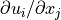
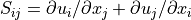
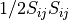
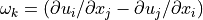
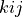

The deformation module.¶
This module implements functions to calculate the deformation tensor for data on a C-grid.
Detailed Module Contents¶
The entire module is documented below.
Created on Mon Aug 2 11:29:37 2021
@author: Peter Clark
- monc_utils.data_utils.deformation.deformation(source_dataset, ref_dataset, derived_dataset, options, grid='w', uvw_names=['u', 'v', 'w'])¶
Compute deformation tensor.
Deformation tensor is defined as .
- Parameters:
source_dataset (NetCDF dataset) – Inout data.
ref_dataset (NetCDF dataset) – Input data for input containing reference profiles. Can be None
derived_dataset (NetCDF dataset) – Output dataset for derived data.
options (dict) – General options e.g. FFT method used.
grid (str) – destination grid (Default = ‘w’)
uvw_names (list of str) – specific names for u, v, and w fields when differing from MONC default Required to be in this order, otherwise we can change to 3 parameters?
- Returns:
Array with new dimensions ‘i’ and ‘j’. Saves to derived_dataset if options[‘save_all’].lower() == ‘yes’.
- Return type:
xarray
@author: Peter Clark
- monc_utils.data_utils.deformation.shear(d, no_trace: bool = True)¶
Compute shear tensor from deformation tensor.
Shear tensor is defined by .
- Parameters:
d (xarray) – Deformation tensor with dimensions ‘i’ and ‘j’.
no_trace (bool, optional) – If true, subtract trace (divergence). The default is True.
- Returns:
S (xarray) – Shear with new dimension ‘i_j’.
mod_S_sq (xarray) – Modulus of shear squared. 
- monc_utils.data_utils.deformation.vorticity(d)¶
Compute vorticity vector from deformation tensor.
vorticity vector is defined as  with  defined cyclically (i.e. 123, 231, 312).
- Parameters:
d (xarray) – Deformation tensor with dimensions ‘i’ and ‘j’.
- Returns:
vorticity – Vorticity with dimension ‘i’.
- Return type:
xarray